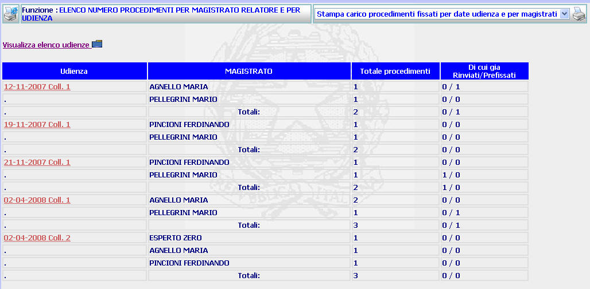

ELENCO NUMERO PROCEDIMENTI PER MAGISTRATO RELATORE E UDIENZA: La funzione consente di visualizzare l'elenco di tutte le udienze comprese in un determinato intervallo temporale con l'indicazione dei Magistrati (e degli Esperti) che risultino assegnatari di procedimenti e del numero di procedimenti assegnati ad ognuno di essi.
LE MASCHERE VIDEO
La funzione viene realizzata attraverso la maschera seguente

COME FARE PER ...
| Per visualizzare l'elenco delle udienze fissate a decorrere da una certa data, l'utente deve cliccare sul link ; |
| Per visualizzare l'elenco procedimenti fissati all'udienza ... per data udienza e Magistrato l'utente deve cliccare sul link relativo all'udienza evidenziato in rosso; |
| Per
generare
la stampa del documento contenente il carico di procedimenti fissati per
udienza e magistrato
l'utente deve selezionare il
pulsante
|
PULSANTI
Oltre al pulsante
 facente parte del gruppo di
pulsanti di "Uso Comune" sono
presenti i seguenti pulsanti:
facente parte del gruppo di
pulsanti di "Uso Comune" sono
presenti i seguenti pulsanti:
|
PULSANTE |
DESCRIZIONE |
|
|
Questo pulsante ha lo scopo di consentire la generazione della stampa del documento contenente il carico di procedimenti fissati per udienza e magistrato |
BOTTONI
Oltre ai comandi funzionali relativi al menù verticale non sono presenti altri bottoni